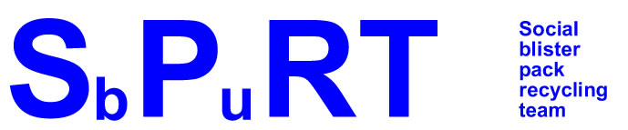

Home
¦
Start a group?
¦
Recycling method
¦
Links
¦
About us
What happens to the blister packs when they reach the factory?
There is an excellent article on how the factory separates the aluminium and the plastic
here